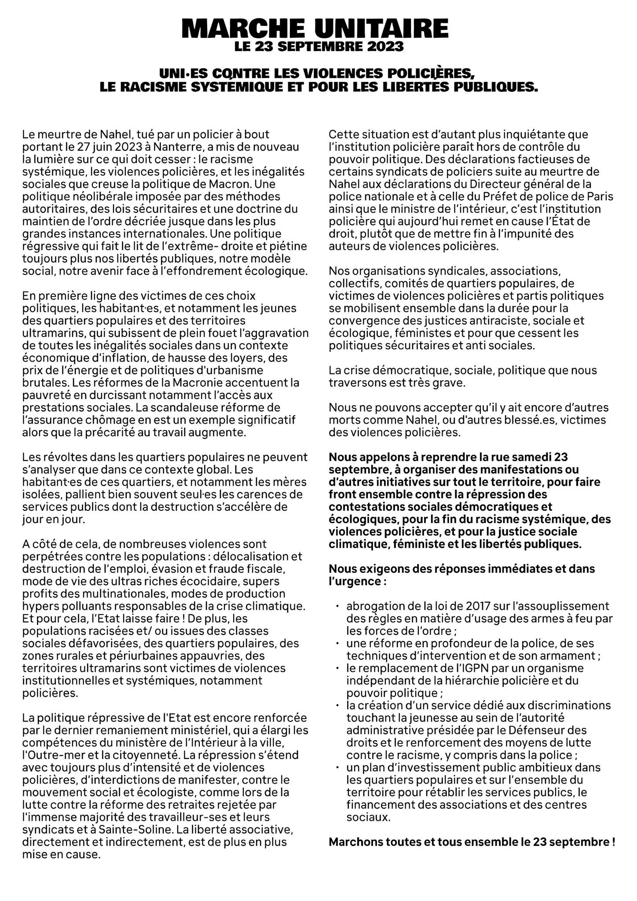

Appel archivé
23 septembre 2023. Marche unitaire à Niort pour la justice sociale
Date indiquée par Facebook · 22 septembre 2023
Repères éditoriaux
Nous avons relayé l’appel au rassemblement du 23 septembre 2023 à 14 h 30, place Auzanneau, au Clou-Bouchet. Les organisateurs appelaient à marcher contre les violences policières, le racisme systémique et pour les libertés publiques et la justice sociale.

Sources
Archive rouge · document diffusé sur Facebook · AR-0002-FB-01578
À lire aussi · Face au budget d’austérité, le PCF propose un pacte d’avenir